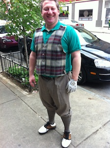
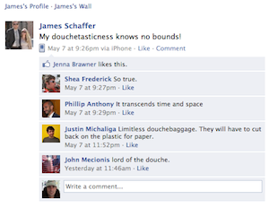
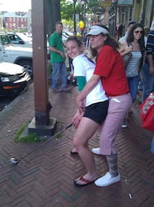
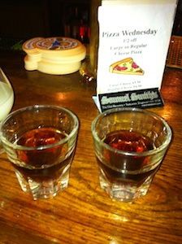
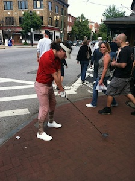
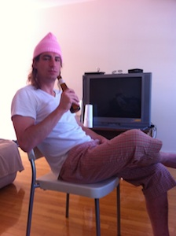

 So yeah-- I used to have a friend who would overuse the phrase "shit just got real." It seemed like every single day shit just kept getting realer. Well that's exactly what happened at last week's Inaugural Double Bogey Invitational at The Links of Fells Point. Now it's true, your average bar crawl typically yields a slew of embarrassing and regrettable stories. But toss in a couple phenomenal golf outfits (shout out to Doug in particular with his pinned on vest), an atypically idiotic crew of drunkards, a home base in the heart of Fells Point, and a whole series of bars that didn't give two shits what we did and SHIT WILL GET REAL. I'm just happy everybody made it out alive.
I put together some pretty badass scorecards to keep track of the specials, embroidered a couple dozen beige visors with the DBI logo, and hand-made a dozen golf ball infused mason jars of jello shots to hand out as prizes. And oh yeah, I was decked out with a golf club, a glove, a pair of rocking pink capris and the whitest loafers you've ever seen. Really, check it.
Let's start in the middle of the day and meander throughout from there. We're at Riptide and Jim's starting to show signs of inebriation. The rugby girls are going to meet us up there and join the crawl-- so Jim and I are getting ready to sing some rugby songs with them. Luckily they're already drunk too when they show up. We roll right into a spirited rendition of Jesus Can't Play Rugby and get through a dozen or two verses. Then these two douchebags sitting next to us start yelling at us to stop -- the Derby's about to start! And we're ruining it for them! So we're running out of verses anyway and we wind down the song. Liz immediately jumps right up in their faces and starts talking shit to them, arm in sling and all. Lindsay and I realize it's not going to end well so we have to literally pick Liz up and carry her out to the front of the bar. Phew, disaster avoided. It would have been awkward to explain to the cops how a girl in a sling kicked the shit out of these two d-bags.
 Somewhere around this time Angie and Phil managed to swipe James' iphone from him-- the irreparable damage can be seen on his wall.
Johnny was another shining star on the day. Surprisingly he was the only one to show up in a kilt! Not to worry though, like any man who wears a kilt out in public he was frequently felt up by women looking for "proof." Ladies, of course it's a kilt-- if we wanted to wear skirts they'd be a lot shorter. Then again Johnny managed to also get felt up by Yair-- I guess it's just a minefield out there. In any case Johnny was awarded the first prize for getting felt up at JA Murphy's. Not to mention he convinced me to tell a black woman that I hoped she got to experience a white dick in her life. Her response: "Oh boy, I've experienced plenty in my life, I've had them in my.....ohhh TMI."
We were up to shenanigans before the day even started. First off the Philly crew came in Friday night and despite everyone saying that they wanted to take it easy and rest up for the DBI we ended up killing it all night. I guess that's what happens when you get started at Brewer's Art. The highlight of the night as well as a carryover to the DBI was the discovery that Susie has a shining, bleached asshole. In fact, Jim doesn't even need a nightlight in his bedroom because he can just slide her pants down to light up the room. What an underrated quality! Closing the bars we decided to just explain away Friday night as the front nine. The morning of the DBI I got a text from Dumont-- he got called into work and wasn't coming. Luckily he's a programmer and I could "offer him a job." I convinced him to bail on work and make the trek up to join us for the DBI. As far as I'm aware it's not a decision he regrets.
Back on the crawl let's recap some of the other prizes that were given out. The second prize was handed to Andy, not for doing anything particularly interesting, more so just because we had made it to the fourth bar and I had only given one out. He had lost his name tag and Doug picked it up for him. It did lead to an excellent speech from Andy who helped us understand how important it was to not lose your name tag and how big of a responsibility we had that day. It also led to me declaring that "everyone should feel like they lost their name tag today." Sadly enough I did not award Andy for something he had just previously done that was particularly worthy. Mid-crawl as we're passing the thrift store after leaving Koopers Andy slips in and buys an outfit for the crawl. Pretty badass!
Almost immediately after that Lesyk and Jackie got into a discussion about where the next bar was. Jackie maintained that we'd be going down to get to the next bar. Lesyk chided Jackie for describing the next bar as down instead of south. Doug chimed in with this zinger: Lesyk, don't ever argue with a girl who's talking about going down. Done. Prize #3 awarded! This is about the time where Yair starts to fret about the lack of attention he's getting. Seeing an opportunity outside of Duda's he conveniently forgets there's a bathroom inside and instead waters the tree. Prize #4! Damn, they're going quickly now. More on Yair later-- I could have written this entire thing about his shenanigans alone.
 After meeting up with the rugby girls Lindsay and I take turns playing the Chubbs to each other's Happy Gilmore. Yup, it's all in the hips. The things you can do when you're carrying a golf club around Fells! And here's a photo to prove it!
As we get over to Wharf Rat the crew is getting visibly sloppy and it becomes hard to keep everyone together. No matter, Yair still manages to earn himself another shot. Standing up on a chair shouting to the entire crew he queries the crowd to find out just how badly they want to see his balls. I step in and inform him that perhaps we should consider the folks running the establishment first. Well, no need to, they gave a quick thumbs up. And that's the first time we all saw Yair's balls that night. Prize #7 awarded! (I can't remember where 5 and 6 went).
This immediately preceded what has been termed "The Great Lesbian Prize Heist." Liz, clearly confused about how prizes are being awarded (in addition to her sexual orientation), grabs the cooler and hands them out to some of the girls. Thwack. Slap on the ass for Liz. Needless to say no more prizes were stolen after that.
 We moved onto Spirits which, again let me repeat, is my favorite bar in Fells. Home of the tub of fun. And my, my, what fun we had! Winning the tub of fun netted you an eagle on this particular hole and Lesyk, who for whatever reason cared about his score, bought round after round from the tub to win that eagle. Rumor has it he just ended up paying off Chad to get that free shot. I, on the other hand, opted for another one of those tasty ATM shots I've been hearing so much about!
Somehow, some way, in some manner a large portion of the crew manages to make it back to the last stop at Alexanders, the only other bar in Fells (in addition to Spirits) that would put up with this much of our shit. One of my favorite stories took place here-- Joe and the Philly crew have been playing some other game all night long that involves a dollar getting passed around (apparently you want the dollar in this game). I think you have to do something stupid or ridiculous to earn it from whoever has it. At least that's how I interpreted it. Well I stunned Joe outside of Spirits by kissing Holly and as he looked at me, mouth agape, I swiped the dollar from him. So some time has passed now that we're back at Alexanders and Joe has pulled himself together and is ready to earn the dollar back. I'm standing on the legs of a barstool and he comes over and declares that he will be taking his dollar back. Before I can even ask how he gets down on one knee and proceeds to serenade me, requesting the dollar back in the process. How could I say no?!? This man got down on his knees to sing to me! Dollar returned and prize #9 awarded.
 As people are falling off and heading home Yair is still running strong. Jess and Kim are fucking around with him and getting a kick out of his antics. Kim decides that it would be a good idea to pants him-- she tells me she only intended to take his shorts off, not his boxers too (right Kim). Well it turns out she has no choice. Yair has pinned his shorts to his boxers to keep them from falling off. And that was the 25173th time that we saw Yair's junk on this day.
I lost a couple of hours somewhere in here but I do know that I carried several people back to my place to crash. At some point Jackie, Joe and I decided to take our hard earned golf balls to the end of the pier and knock them into the harbor with a 5-wood. Joe ripped up a piece of sod and laid it on the dock. We each set up our balls and whacked those suckers somewhere out into the harbor. Pretty wild really. Some of my hashing friends (Lindsey and another Joe) had made their way out at various points and we went into Slainte for a round. Rob will have to fill you in on those details. In any case somehow the rest of the food got cooked (well sort of, there were a couple pounds of partially cooked meat on the grill when I woke up) and some of it got eaten. Joe and Holly took an inflatable bed up onto my roof and set up a bed under the stars (how romantic guys).  I, on the other hand, decided I still wasn't ready to turn in. And this led to Rob's favorite part of the night. I walked out my back door in only my argyle socks and capris-- apparently I thought they were going to let me into the bar like this. Fortunately (for both me and them) I see Rob and Dan locking up Slainte. Sad that I cannot get another beer I invite Dan up. At this point there are about 8 or 10 people passed out in my house, including Holly and Joe on the roof. Dan and I head up to the roof, kick them awake and proceed to drink a six pack over the next hour without any regard for the two of them lying in bed. It's about that time that I finally crashed, the last victim of the DBI.
If I could sum up the day in one reaction it would be this. Angie shared this gem with me about when her friend showed up in the middle of the crawl: "My friend Liz sort of looked like she stepped on a dead rat in bare feet." And if I could sum up the day in an anecdote it would be this. It turns out Andy thought he lost his keys during the night so he decided to sleep on the stoop. Holmes wakes up the next morning and finds his keys in his own pocket.
And there you have it. That's the way it went down, real or imagined.
On on to the next Dishwasher Boogie production!